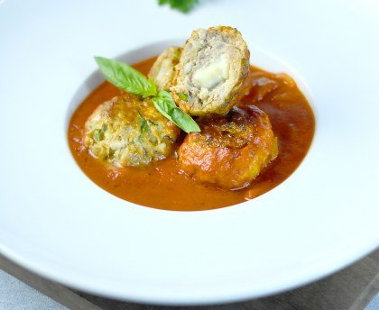

Boulettes surprise à la mozzarella
Ingrédients
4×
- 2 oignons
- 1 oeuf
- 1 gousse d'ail
- 2 c. à s. de persil
- sel
- poivre
- 600 g de veau haché
- 50 g de chapelure
- 1 boule de mozzarella
- 3 c. à s. d'huile d'olive
- 1 poivron rouge
- 75 cl de coulis de tomate
- 1 cube de bouillon
- basilic

Préparation
Étape 1
Mixer 1 des 2 oignons avec 1 oeuf, 1 gousse d'ail, 2 c. à s. de persil, du sel et du poivre. Verser sur 600 g de veau haché, ajouter 50 g de chapelure et malaxer. Rectifier l’assaisonnement.
Étape 2
Couper 1 boule de mozzarella en petits dés. Façonner les boulettes en enfermant un dé de fromage au centre de chacune.
Étape 3
Dorer les boulettes à feu vif dans une grande poêle avec 1 cas des 3 c. à s. d'huile d'olive.
Étape 4
Dans une cocotte, fondre 10min à feu doux l’oignon restant et 1 poivron rouge émincés dans le reste de l’huile.
Étape 5
Ajouter 75 cl de coulis de tomate et mixer. Ajouter 1 cube de bouillon émietté et les boulettes, puis laisser mijoter 25min à feu très doux.
Étape 6
Servir bien chaud, saupoudré de basilic.
Résumé
2 oignons
1 oeuf
1 gousse d'ail
2 c. à s. de persil
sel
poivre
600 g de veau haché
50 g de chapelure
Mixer malaxer
1 boule de mozzarella
Façonner les boulettes
3 c. à s. d'huile d'olive
Dorer
1 poivron rouge
fondre feu doux
75 cl de coulis de tomate
1 cube de bouillon
basilic
mixer laisser mijoter 25min